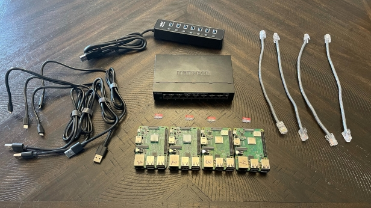

In part 1 we will build the physical cluster, install docker, initiate the swarm, and start our first container to monitor the swarm. At the end of this tutorial we will have a cluster of at least 2 pi’s that is ready to start running containers.

I am using:
4x Raspberry Pi 3Bs- Supply on 3Bs has been low, use Raspberry Pi 4.- 4x 16gb Micro SD Cards
1x USB Powered USB Hub– I am using an Atolla 7-port powered USB Hub to power my Pi’s, I haven’t had issues with this tactic before, but while building the project I noticed that turning ports on and off causes a power surge that forces all Pi’s to reboot. Use legitimate power supplies rated at 2.5A for each Pi.- 1x Netgear 8-port gigabit network switch
- 4x Network Patch Cables (I made my own)
- Standoff Set
Build the tower
Later we will design and build a modular enclosure for the pi’s, but this tower will work through setup, and really, for the life of the project if you want. The tower will keep the boards organized and secure while building configuring and troubleshooting the cluster. Using the standoffs, stack the pi’s into a tower. I use 6mm standoffs on the bottom board to act as feet, and 19mm standoffs between each board. The top board is secured with 2.5mm screws. I have numbered my Pi’s on the top of the ethernet port to keep track of them. This isn’t necessary but may be helpful to keep track of boards when moving to an enclosure.
Flash the SD cards
To flash the SD Cards we need software to flash the SD Card and the OS image file. I am using Etcher to flash the cards. It is free and simple to use. Though there are other options out there.
The OS we are using is Raspberry Pi OS Lite (Buster) and the image file can be downloaded from the Raspberry Pi Foundation Website. The lite version has minimal software pre-installed and no graphical desktop environment.
Once Etcher is installed and the OS image is downloaded and extracted, insert the first SD Card into the card slot and open Etcher. Select the image file, then the SD Card. Make sure you are selecting the right drive letter (Etcher should hide your system drives, but always double check). then hit “Flash”
Etcher will flash the SD Card with the image and verify that it was done correctly. When it is finished check the drive letter of the boot drive on the SD Card, in Windows explorer it is labeled as “boot”. Leave the card in the computer.
Raspberry Pi OS disables SSH by default. We need to add an empty file to the boot drive called ‘ssh’ to enable SSH on boot. SSH (Secure SHell) is how we will interface with the R-pi. Using SSH means we do not need any extra peripherals or a monitor to plug in, it will let us control it from our desktop.
To create this file open the Start menu and type cmd . This will open the windows terminal. Type in the drive letter of the boot drive followed by : and hit
ENTER to switch to the boot drive.
Microsoft Windows [Version 10.0.19041.804](c) 2020 Microsoft Corporation. All rights reserved.C:\Users\[username]> D:
We will use echo to output a file called ‘ssh’ type:
>echo. > sshIf we were to type
echo > sshthen by default the echo command would write the string “ECHO is on.” to the file.
If we were to type
echo Hello World > test.txtA file called test.txt would be created containing:
ECHO is on
Hello World
Verify that the boot drive now contains a file called ‘ssh’. If it’s there, eject the SD Card and insert it into the first Pi. If the file is not there, open the terminal and verify you are inputting the commands in the correct drive letter.
Repeat this process for the rest of the SD cards.
Initial Configuration
I recommend performing this step one pi at a time to help keep things organized. Create a new text file on your desktop (Or use Excel, or Word or whatever you want) to record information. Connect the first Pi to your network and power it on. The first boot will take a minute as initial setup scripts run. We need to find the IP address of this Pi. If you are comfortable with your routers admin interface you can find it in there or we can use another piece of free software called Angry IP Scanner.
Download, Install, and Run Angry IP Scanner on your desktop. Leave the default settings and hit the Start button. The scan takes a minute and when it is done, should provide a list of every pingable device on your network. Click the ‘Hostname’ column header to sort by hostname and find the hostname ‘raspberrypi.local’
In notepad record the IP address of the pi.
Now we are going to SSH into the raspberry pi. Windows has a built in SSH client, but we will be using PuTTY, a free SSH client with a nice interface that lets you save settings to quickly connect to nodes in the future. Download PuTTY from the putty.org website and run it.
Enter the Pi’s IP Address in the Host Name field, leave the Port at 22, and Connection type set to SSH.
Click Open, If you have done everything successfully you will get a warning. All this warning is sayings is that you have never connected to this device before and your computer doesn’t recognize it yet. Click OK and a terminal window will open asking you for a login. On Raspberry Pi OS the default username is ‘pi’ and the default password is ‘raspberry’. If you typed in the username and password correctly you will get some text and your cursor. Congratulations you are now remotely connected to your pi.
For the initial configuration we are going to:
- Change the default password – Always a good idea, but especially when port 22 is open
- Change the device’s host name
- Update the pre-installed software
In the terminal type sudo passwd pi and hit enter. Follow the prompts to updated your password.
sudo (Super User DO) elevates your user to have root permissions for the specific action you are about to perform. Typically on linux systems you will be asked to input your sudo password when running commands, Raspberry Pi OS has the user, pi, in the sudo group without needing a password. This is useful when doing initial setups, but should be changed back to require a password when your system is in production.
passwd is the application to change a password.
pi is the user you want to change the password for. I am sure by know you have noticed that when typing passwords in linux, no characters display. This is the normal behavior.
Next we will change the hostname of the pi. We will use a built in text editor called nano. Type:
$ sudo nano etc/hosts127.0.0.1 raspberry
Delete raspberry and change it to a new host name. I am calling my setup hana and I am numbering each node so my hostname for the first pi is hana01. This can be just about anything you want, but if you want simplicity use docker01. The next pi will then be docker02 and so on. At the bottom of the screen is a guide to nano commands. to save our changes press [CTRL]+O, it asks for a file name; just hit enter to save to the same file, then a message will tell you [ Wrote n lines ] to tell you it was a successful save. Press [CTRL]+X to exit nano and return to the terminal screen. Log the new hostname next to the ip address in your notes.
Then we need to change the hostname in /etc/hostname run:
$ sudo nano /etc/hostname
Reboot the pi so the new hostname takes effect. To safely reboot a raspberry pi type:
sudo reboot
Login using pi and your new password, now we are going to update the pre-installed software. Type:
$ sudo apt update && sudo apt upgrade -y
This will probably take a few minutes so lets talk about what's going on here.
apt is a command line utility for managing packages on Debian based systems. Packages are software that run on the computer. apt is extremely useful and easy to use to install software that is maintained in a repository. You will also see sudo apt-get [arg] this is the old method, the -get is no longer required.
update is pulling the most recent list of packages and versions to compare against packages that are installed on the pi, If we were to run update alone, it would tell us how many current packages need to be updated
&& is a joining command, you are telling the system to run a command AND THEN run the following command, but ONLY if the preceding command completes successfuly
upgrade will...upgrade...any installed packages that have updates available, the -y is a flag to tell it you approve of whatever prompts it will throw. Without the -y, every package will tell you how much additional space is needed and ask you to accept it...this can get tedious when doing large upgrades like on initial setups.
Once the updates are complete, do a final reboot of the pi and repeat these steps for each additional pi, making sure to log the IP addresses and Hostnames.
Install Docker
You should now be able to open multiple instances of Putty and log into each of your Pis. Docker has an install script that detects the architecture of the
system and downloads and installs the correct version of Docker. We will use 'curl' to get the install script. On each Pi run:
$ curl -ssl https://get.docker.com | shThis command will download and run the install script. This takes a few minutes. At a couple points the script my pause and notify you that docker may already be installed and give you the opportunity to cancel the install. Just leave it alone and it will continue when the timer runs out.
While Docker installs, lets talk about what we just ran.
curl is a command line utility for transferring data using multiple protocols. We will be using this more when we setup devices in our smart home
-ssl is a flag telling curl to try to use SSL/TLS when communicating with the server
http://get.docker.com is the target URL and tells Linux to pull the install script.
| is called a pipe, and it passes the output of the preceding command as an input to the following command
sh is a command to run a script file. So we pull the install script from the website, and pipe it to sh.
Adding the user pi to the docker group allows you to run docker commands with out elevating them with sudo. Run:
$ sudo usermod -aG docker pi
Next we need to set the docker services to start automatically on boot. Docker has two services we need 'docker' and 'containerd'. Run:
$ sudo systemctl enable docker.service && sudo systemctl enable containerd.serviceThen reboot the Pi. Remember, this needs to be done on all the Pi's.
When the Pis come back up log back in and verify your docker installations by running:
docker run hello-worldCreate the swarm
We will now create the swarm and start adding our nodes. A docker swarm has two types of nodes, managers, and workers. Managers monitor resources and deploy containers to nodes. Managers can also act as workers and will run containers also. Workers only run containers. Managers in Docker Swarm require a quorum (majority) to run actions. So if there are 3 manager nodes, 2 managers must be present to perform an action. This setup allows us to loose 1 manager and still have our swarm functioning. I will be setting up my swarm with three managers, and one worker.
SSH into the first pi (hana01 for me). We will initiate the swarm on this node.
$ docker swarm init --advertise-addr [NODE IP ADDRESS]
We need to generate the manager join token to add managers to the swarm. Run:
$ docker swarm join-token managerLets add the rest of the nodes.
Open the next pi, copy the Manager Join Command and paste it into the terminal. Then repeat again with the third node. Open the last Pi and use the worker join to join
as a worker. Switch to one of the manager nodes and run the command:
It will return a list like this:$ docker node ls
This list the nodes that are connected to the swarm and their status. If one of the nodes goes offline for any reason the Status and Availability will change. If the leader node is removed, one of the other managers will be promoted to leader.
Our first service!
Now the good stuff, our first service is going to be a status visualizer. This container will create a Web dashboard to display the status of the swarm and what containers are running. On one of the manager nodes run:
$ docker service create --name vix \--publish 8080:8080/tcp \--constraint node.role==manager \--mount type=bind,src=/var/run/docker.sock,dst=/var/run/docker.sock \alexellis2/visualizer-arm:latest
This will start the service and download the container on each of the manager nodes. While the container is deploying it will show the REPLICAS value as 0/1.
Once it is complete that will update to 1/1. At this point open your web browser on your desktop and navigate to [NODE ADDRESS]:8080
Your swarm is now set up. In Part 2 we will discuss what the cloud, microservices, and container are and we will install our own cloud service to keep data synced across nodes.